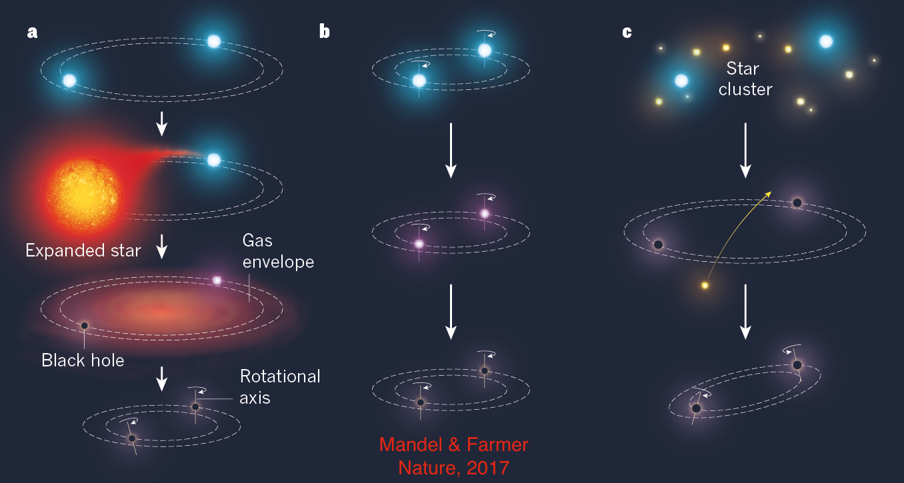

| Home | Current projects | COMPAS | To personal webpage |
|
My primary resarch focus now is on interpreting gravitational-wave observations to learn more about massive binary evolution. Gravitational-wave observations allow us to probe the short, brilliant, turbulent, but somewhat secretive lives of massive stars. Like a paleontologist who uses the skeletons of dinosaurs to discover what living dinosaurs looked like, we can begin to probe the evolutionary history of massive stars by observing their compact remnants, merging pairs of black holes. My group is developing a dedicated code for Compact Object Mergers: Population Astrophysics Statistics in order to model compact binary evolution and compare results to observations. I recently wrote an accessible summary and a colloquium-style review with Alison Farmer. Other key recent research achievements include:
|
 |